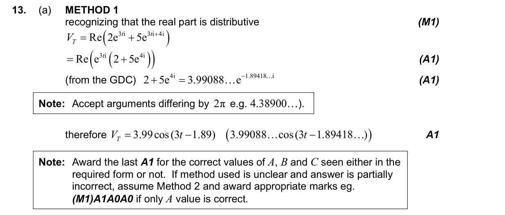
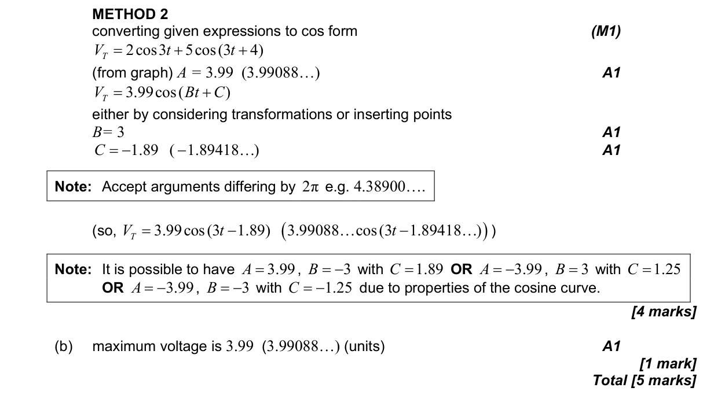

1.13 Polar and exponential forms of complex numbers2.9 Further models: half-life, logarithmic, sinusoidal, logistic and piecewise
Question

Markscheme


5 marks - May P1 TZ2 - Mathematics: Applications and Interpretation HL

